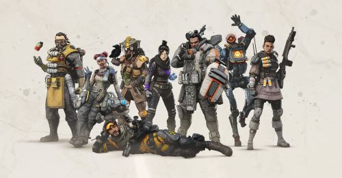

Apex Legends
Info
Apex Legends is set in the same science fiction universe as Respawn Entertainment's Titanfall series, with several characters from the Titanfall series appearing either as minor characters or playable Legends. Work on the game began around late 2016, though the project remained a secret right up until its launch. The game's release in 2019 came as a surprise, as until that point it had been assumed that Respawn Entertainment was working on a third installment to the Titanfall franchise, the studio's previous major game. Apex Legends received generally positive reviews from critics, who praised its gameplay, progression system, and fusion of elements from various genres.
Gameplay
Apex legends gameplay is much like its previous game Titanfall 1 and 2, both games have very smooth movement and fun battle mechanics. It is a multiplayer game, and you face other people from around the world. The game starts you off joining a squad of either 1 or 2 players. After you setup your squad you get to pick what character you would like to be. Each Character has unique abilities that will help you on the battlefield. These characters are known as legends and some of these legends can track down other players, throw down shields so you squad mates are protected, put down electric fences so that no one can pass them, or even fly you out of a dangerous situation. This is a squad-oriented game so running off alone is going to get you into bad situations. The goal of the game is to take out other squads on the map and be the final squad standing.
Personal opinion

This game stands out from the other titles in the genre “Battle Royal” because it is unique. The way each legend is more distinct from the other makes it so that even seeing silhouettes of them you would recognize the character. Each character has a backstory to how and why they joined the Apex games and you get to see what legends know each other or don’t like about one another. The story behind this game makes it more meaningful and makes each character have a story. If this game did not have some backstory for each character, I think it would not have done as well. I personally love this game because of these characters and each one is special. I love the gameplay as well, very smooth and fast to make it not feel like forever to play a single game. I love the synergy of working with my teammates to take down a squad and getting one step closer to coming in first. Using characters abilities to go in your favor and get the upper hand is what makes this game shine. It gives everyone a chance because at first it is very tough to pick up on the basics but once you start learning you will just start doing it naturally without any fault. This game is updated often so there is something new for everyone and this game has fresh ideas and surprises me every time I play it, you never get two of the same game because each one is different from the last weather that is from squad mates or just what character you are playing. This game is very fun and exciting, it is definitely the best Battle-Royale games I have played.
Apex Legends Trailer
Reviews and Purchase info
Metacritic-88/100
IGN- 9/10
Destructoid- 8.5/10
Apex legends is Free on steam